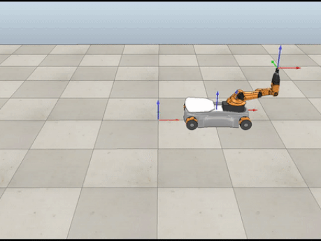
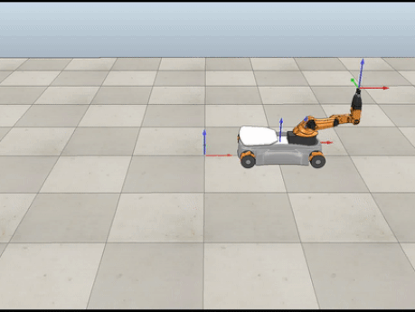
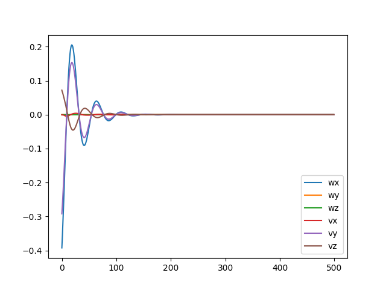
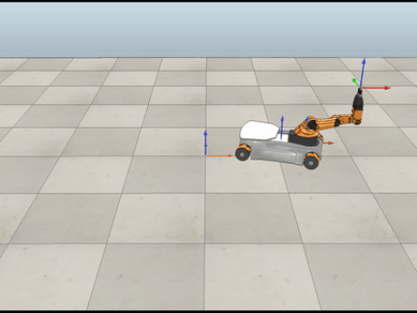

In total, this robot has eight degrees of freedom. Five of them are single-axis rotational joints on the arm itself while the other three describe the ability for the chassis to move in the \(x\) and \(y\) directions and rotate in the plane. In the problem, the initial positions of each of these joints are given. To move the end-effector back onto the path, a 5 second control loop was implemented with 0.01 second increments, where at each timestep:
At each time step, the configuration was saved to a csv file resulting in a file with 500 rows. The file was then input to the V-REP simulator so that the robot's movement could be visualized. Three different simulations were run with different initial conditions as is explained in the video demo below.
For the case below, the robot started off the path. A proportional gain of 5 and integral gain of 15 were used to bring it back onto the path in approximately 1.5 seconds.


For the case below, the robot started on the path. Only feedforward control was used. Additionally, the error was very small compared to the other cases.
 

For the case below, the robot started off the path. A proportional gain of 7 and integral gain of 200 were used to bring it back onto the path in approximately 1.1 seconds. As the integral gain was much higher than the proportional one, it was expected that there would be more oscillations.
 